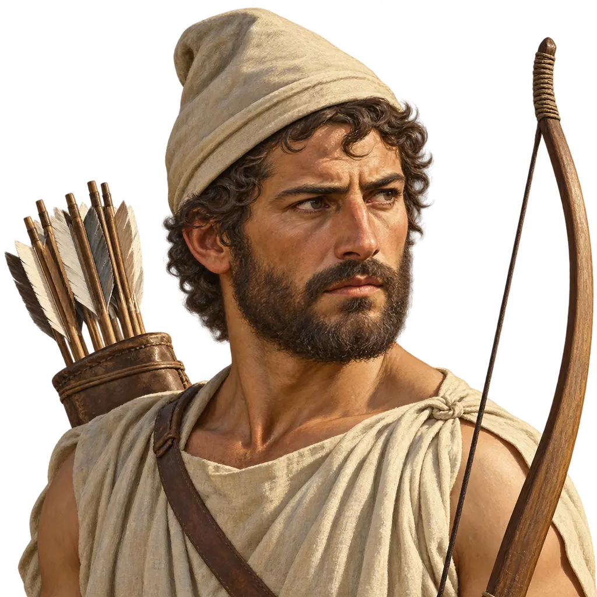
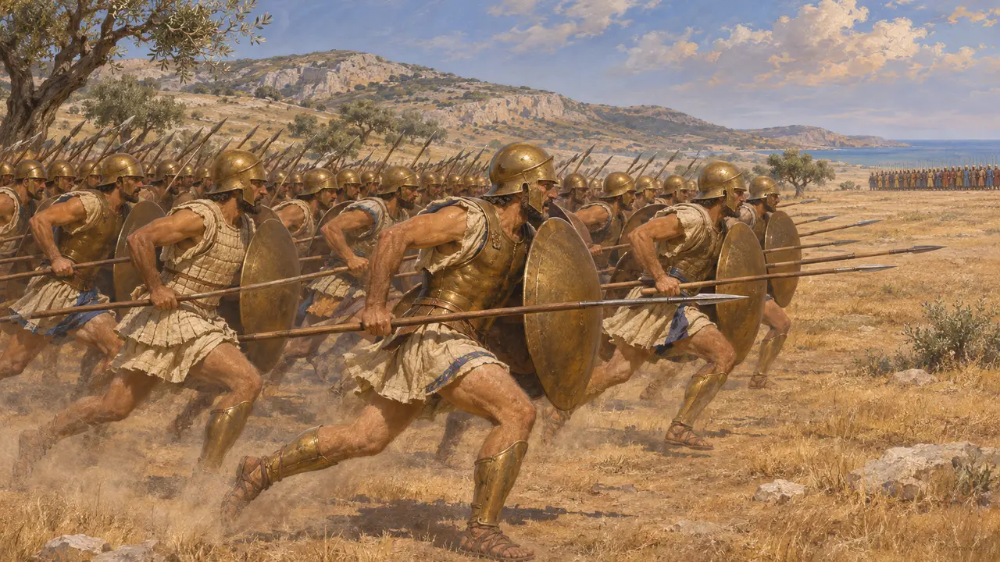
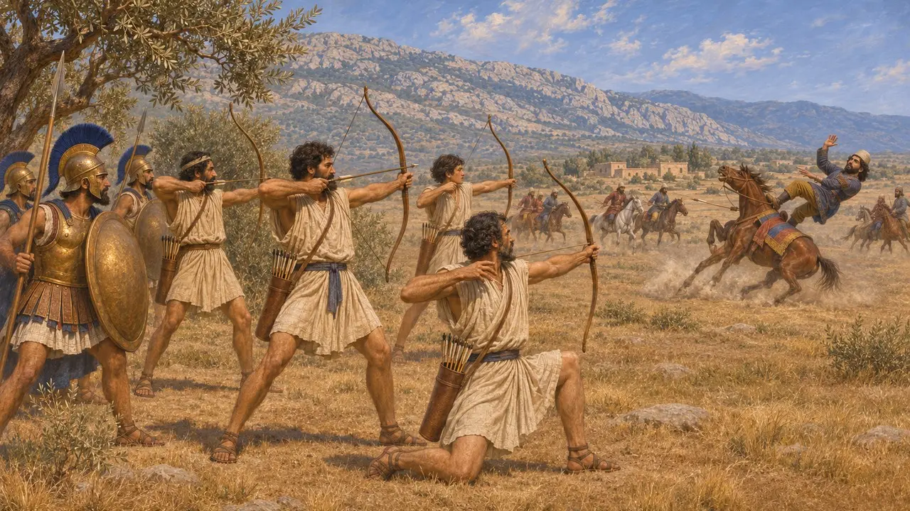
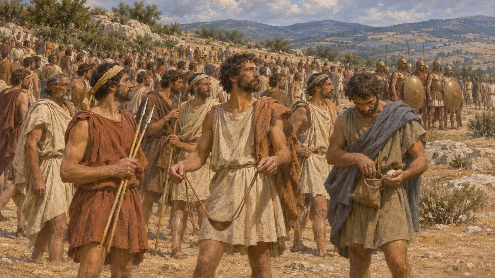
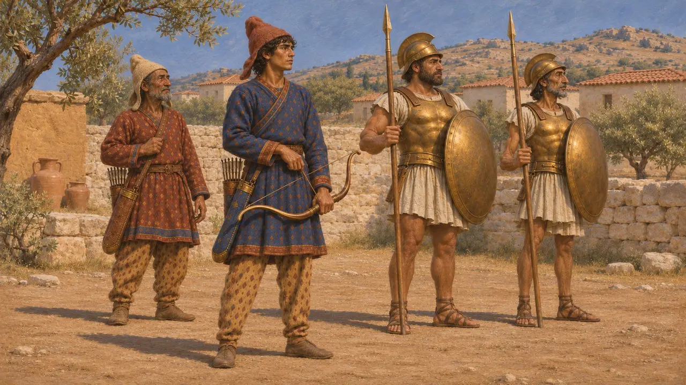
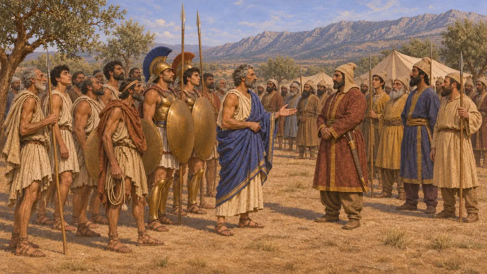

الرماة اليونانيون والقوات الخفيفة
قوّاسون ورماة مقاليع ورجال مسلحون تسليحًا خفيفًا في الجيوش اليونانية، نحو 499-479 ق.م
في اللعبة: المستوى 8: خليج ماراثون، المستوى 11: الخاتمة
كانت جيوش المدن اليونانية في هذه الحقبة تقوم على الهوبليت، الرمّاح المدجّج بالدروع، وكان لدى معظم المدن قليل من الرماة المدرَّبين. ووُجدت قوات خفيفة، كثيرًا ما كانت من فقراء المواطنين أو العبيد أو الهيلوت، لكن الكتّاب اليونانيين نادرًا ما يصفونها. ويساعد دورها الضئيل على تفسير سبب ظهور الرماة والخيّالة الفرس بمظهر بالغ الخطورة في نظر اليونانيين، وإن كان لأثينا رماتها الخاصون بحلول عام 479 ق.م.
في اللعبة: تمنح اللعبة الغارات رماةً أثينيين، وتقرّ ملاحظتها نفسها بأن ذلك مُختلَق (هيرودوت 6.112). أما قوّاسوها اللوكريون والبيوتيون فيخدمون الملك: وهذا صحيح في بلاتيا، لكن اللوكريين قاتلوا ضده في ثرموبيلاي.

لا رماة في ماراثون
رواية قديمةيقول هيرودوت إن الأثينيين حين اندفعوا جريًا نحو صفوف الفرس في ماراثون سنة 490 ق.م، ظنّهم الفرس مجانين، لأنهم كانوا قلّة ولم يكن معهم خيّالة ولا رماة. وقد قاتلوا في كتيبة متراصّة من الهوبليت، وإلى جانبهم أهل بلاتيا. ولا يذكر هيرودوت كذلك رماةً بين الأثينيين الذين أبحروا لنجدة الأيونيين في إحراق سارديس سنة 498 ق.م.
Herodotus 6.112; Herodotus 5.99-102

الرماة الأثينيون في بلاتيا
رواية قديمةبحلول عام 479 ق.م كان لأثينا فرقة من الرماة. ويروي هيرودوت أنه حين ضغطت الخيالة الفارسية بقيادة ماسيستيوس على الميغاريين، خرج 300 من صفوة الأثينيين بقيادة أوليمبيودوروس لنجدتهم ومعهم الرماة. فأصاب سهمٌ حصان ماسيستيوس فطرحه أرضًا، وقُتل. ويذكر بلوتارخ لاحقًا أن كل سفينة أثينية في سلاميس حملت أربعة رماة بين مقاتليها.
Herodotus 9.21-22; Plutarch, Themistocles 14

كم كان عدد القوات الخفيفة
متنازع عليهيقول هيرودوت إن كل مواطن إسبرطي في بلاتيا كان يرافقه سبعة من الهيلوت المسلحين، ويُحصي في الجيش اليوناني 69,500 من الجنود الخفاف، أي أكثر من الهوبليت. ويشكّ المؤرخون في هذه الأرقام المدوّرة التي تبدو محسوبة لا معدودة. ومع ذلك لا يزال كثيرون، ومنهم فان فيس، يرون أن رجالًا بلا دروع يحملون الحراب أو المقاليع أو الحجارة كانوا حاضرين بأعداد كبيرة، وإن أغفلتهم المصادر في الغالب.
Herodotus 9.28-30; H. van Wees, Greek Warfare: Myths and Realities, 2004

رماة في زيّ سكيثي
متنازع عليهكثيرًا ما تُظهر رسوم الأواني الأثينية من نحو 530-490 ق.م رماةً بقلنسوات سكيثية وسراويل مزخرفة إلى جانب الهوبليت. ويرى بعض الباحثين أنهم مرتزقة سكيثيون حقيقيون استأجرهم طغاة أثينا، بينما يراهم آخرون نمطًا فنيًا يمثّل أي رامٍ، أو يمثّل أبطال الأساطير. ولا تحسم هذه الرسوم ما إذا كانت أثينا قد احتفظت برماة أجانب قبل الحروب الفارسية.
M. F. Vos, Scythian Archers in Archaic Attic Vase-Painting, 1963

يونانيون في صف الملك
رواية قديمةفي سنة 480 ق.م أرسل اللوكريون الأوبونتيون قوتهم كلها للدفاع عن ثرموبيلاي في وجه خشايارشا، وكان الثيساليون قد انحازوا إليه من قبل. ويذكر هيرودوت أنه بعد سقوط الممر انضم اللوكريون والماليون ومعظم البيوتيين إلى الفرس أيضًا. ويعدّهم بين اليونانيين الذين قاتلوا في صف ماردونيوس عند بلاتيا، وكان الطيبيون أشدّهم التزامًا، لكنه لا يذكر أيّ هؤلاء الرجال كانوا رماة.
Herodotus 7.203; Herodotus 8.66; Herodotus 9.31
المصادر
- Herodotus 6.112
- Herodotus 9.21-31
- Herodotus 7.203
- Plutarch, Themistocles 14
- H. van Wees, Greek Warfare: Myths and Realities, 2004
- M. F. Vos, Scythian Archers in Archaic Attic Vase-Painting, 1963